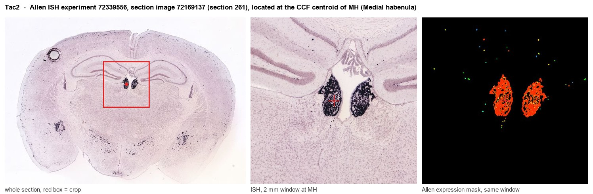
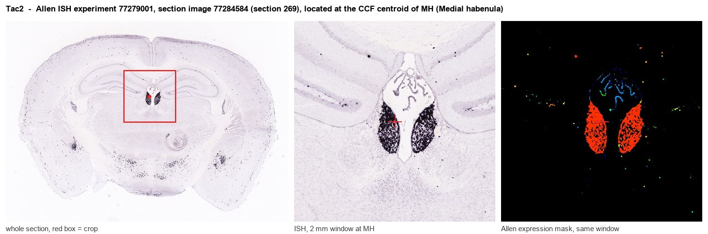
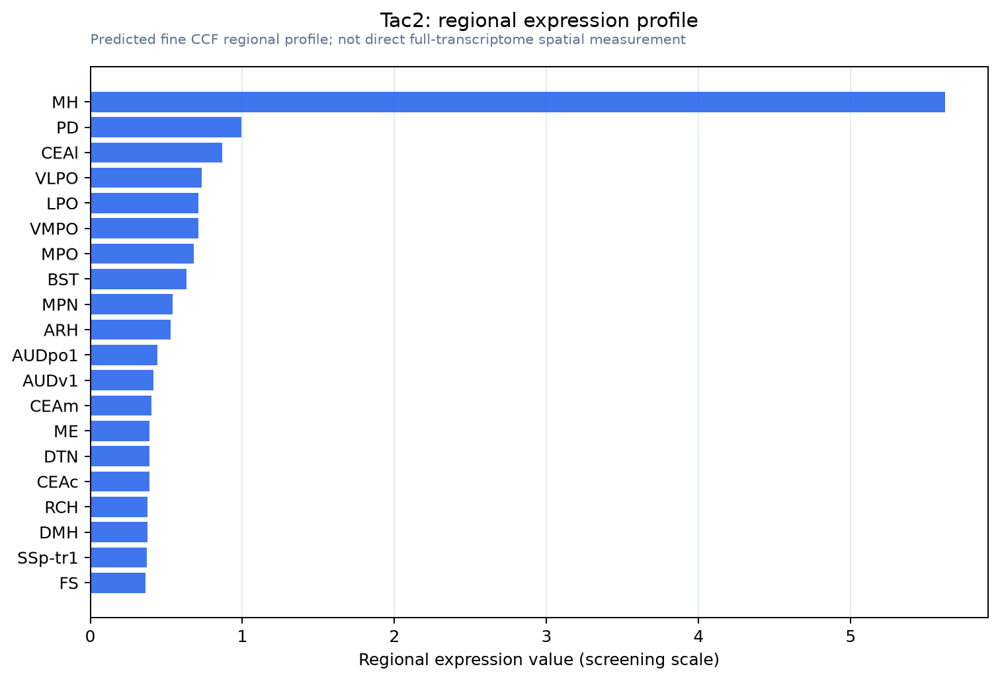

Tac2
Spatial tier: STRICT_EXCLUSIVE · Class: OTHER · Top region: MH (Medial habenula) · Positive regions: 1/554
Function in MH: evidence, prediction, innovation
- Gene function
- Tac2 encodes preprotachykinin B, precursor of neurokinin B (NKB). NKB acts preferentially at the Gq-coupled NK3R (Tacr3), driving phospholipase C signalling and excitation. It is known in KNDy neurons controlling GnRH pulsatility and in stress and social-isolation states.
- Region function
- The medial habenula projects via the fasciculus retroflexus to the interpeduncular nucleus, governing anxiety, fear, nicotine aversion/withdrawal and intrinsic reinforcement.
- Published in this region
- direct Mar et al. 2012 made Tac2-Cre mice: epithalamic Tac2-lineage labelling is dense and essentially restricted to medial habenula, processes leaving ventrolaterally. Hsu et al. 2016 showed NKB-immunoreactive dorsal MHb neurons support optogenetic intracranial self-stimulation, and dMHb lesions alter tail-suspension immobility. Hashikawa et al. 2020 confirms Tac2 as a top MHb subtype marker in single-cell data; Zelikowsky et al. 2018 tied Tac2/NKB to isolation-induced brain states elsewhere.
- Predicted function
- Prediction: NKB from MHb terminals excites NK3R-expressing interpeduncular neurons, amplifying aversive/withdrawal signalling atop fast cholinergic-glutamatergic transmission. Conditional Tac2 deletion or NK3R blockade (osanetant/SB-222200) in the MHb-IPN axis should blunt nicotine-withdrawal somatic signs and anxiety without abolishing baseline transmission; senktide in IPN should mimic aversion.
- Innovation
- ★★☆☆☆ 2/5 Tac2 is the canonical MHb marker with functionally characterised neurons, yet the peptide's own action at MHb-IPN synapses is largely untested.
- Tools
- Tac2-Cre knock-in mice, Tac2-GFP/Tacr3 reporters, NK3R agonist senktide, antagonists osanetant and SB-222200, anti-NKB antibodies; MHb is targeted via fasciculus retroflexus and IPN terminals.
- References
Direct evidence located at the region

Allen ISH experiment 72339556, section image 72169137 (section 261): the section that contains the CCF centroid of Medial habenula according to the Allen image-to-atlas alignment (reference_to_image), with a 2 mm window around that point. Left: whole section, red box = window. Middle: ISH signal. Right: Allen's expression-mask view of the same window. open this image in the Allen viewer

Allen ISH experiment 77279001, section image 77284584 (section 269): the section that contains the CCF centroid of Medial habenula according to the Allen image-to-atlas alignment (reference_to_image), with a 2 mm window around that point. Left: whole section, red box = window. Middle: ISH signal. Right: Allen's expression-mask view of the same window. open this image in the Allen viewer
Direct spatial evidence

Regional expression figure

Predicted WMB × fine-CCF profile; not direct full-transcriptome spatial measurement.
Spatial profile
Evidence and specificity
- Evidence status
- PREDICTED_FINE
- Direct sources
- None; predicted localization only
- Exclusive threshold
- 12 positive regions out of 554
- Spatial specificity
- 0.405
- Top-region fraction
- 0.270
- Filter status
- PASS
Interpretation limits
- Cell-type-to-region projection is imputed expression, not direct spatial measurement.
- Adult reference atlases do not establish stability across age, sex, strain, state, or disease.
- Transcript abundance does not guarantee protein abundance or genetic-tool performance.